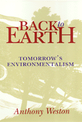

An environmentalism that restores humans' connection to Earth
An environmentalism that restores humans' connection to Earth


 An environmentalism that restores humans' connection to Earth
An environmentalism that restores humans' connection to Earth

|  |
Back to EarthTomorrow's EnvironmentalismAnthony Westonpaper EAN: 978-1-56639-237-2 (ISBN: 1-56639-237-3) |
"In this exceptionally engaging book, Anthony Weston goes beyond the 'environmental ethics' approach to argue for the reinstatement of our age-old connections to Nature and other animals: what Vice President Al Gore refers to as a sense of the 'vividness, vibrancy, and aliveness of the rest of the natural world.' Weston draws upon an encyclopedic knowledge of recent research in animal behavior in his proposal for a new trans-species 'etiquette.' He also provides practical suggestions for redesigning our cities and neighborhoods in bioregional ways to help bring about a new ecological relationship with Nature."
—George Sessions, Sierra College, coauthor of Deep Ecology: Living as if Nature Mattered
In the face of our receding connection to nature and the loss of our direct experience of the world, Anthony Weston proposes a different kind of environmentalism in Back to Earth. Weston argues that we must restore our link with the "more-than-human" world, bringing wilderness, animals, and the Earth closer to individuals and into daily life.
Weston explores a multitude of practices that can bring humans back in touch with the "more-than-human" world. Using specific, sometimes deeply unsettling, accounts of the state of animals and the land, Weston makes clear that as humans we must put aside our presuppositions about our own centrality and superiority. Instead, for example, we would do well to consider the means by which animals communicate and understand boundaries, thereby establishing what Weston terms "transhuman etiquettes."
While acknowledging that environmentalist policies such as recycling and protecting habitat and species remain crucial, Weston argues that we must go further and deeper. To do so, one essential effort is to restore our connection to Earth: affirming our participation in this world through a rediscovery of touch and smell; noticing the details of nature; restoring the great annual celebrations that remind us of the turn of the seasons and the migrations of birds; building houses in new Earth-friendly ways; and planning neighborhoods that allow for other-than-human beings and wild areas as well as ourselves.
Excerpt available at www.temple.edu/tempress
"This is a wonderful book, generous and graceful—exactly what we need. Back to Earth is an invitation to live 'in the presence of the more-than-human...to awake and go to sleep with it, to take its rhythms and cycles for the rhythms and cycles of [our own lives], until the two finally merge into one stream.' It is written in the conviction that our fate is bound up with the more-than-human world and that to return home, to come back to earth, is a matter of etiquette, grace, and generosity of spirit—and a matter of coming, once again, to our senses through concrete and practical 'enabling practices,' sources and embodiments of a genuine environmental ethic."
—Jim Cheney, University of Wisconsin
Acknowledgments
1. Has Environmentalism Forgotten the Earth?
2. Animals Next to Us
3. Animals on the Borderlines
4. The Land Sings
5. Desolation
6. Coming to Our Senses
7. Transhuman Etiquettes
8. Is It Too Late?
Notes
Index
 | Anthony Weston teaches Philosophy and Interdisciplinary Studies at Elon College, North Carolina, and is the author of Toward Better Problems: New Perspectives on Abortion, Animal Rights, the Environment, and Justice (Temple). |
Nature and the Environment
Philosophy and Ethics
© 2015 Temple University. All Rights Reserved. This page: http://www.temple.edu/tempress/titles/1145_reg.html.